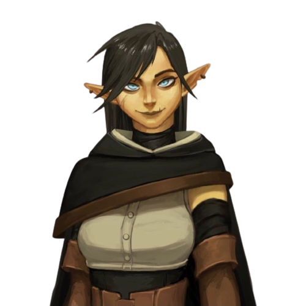

Agwen se esconde no topo de uma árvore, pega seu arco e flecha e enfrenta o monstro numa batalha mortal.
Sua última flecha é cravada no coração de seu inimigo e ela dá seu último suspiro ao cair dentro do lago.
Então Agwen entra na caverna e avista o tesouro, fica feliz por ter acreditado no boato e volta para casa orgulhosa
pela conquista e a conclusão da missão.